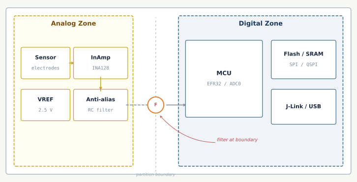
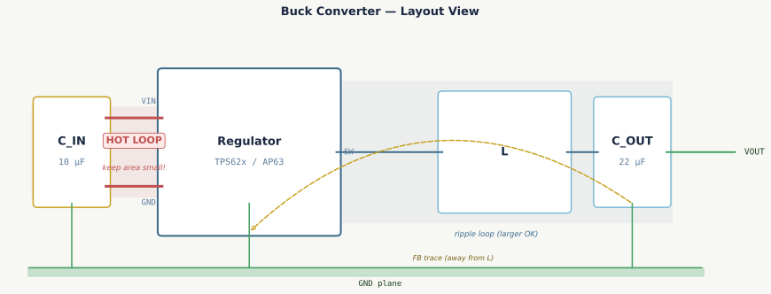

Mixed-Signal Partition
matplotlib (current)

hand-coded SVG (iterating)
Analog Zone
Digital Zone
partition boundary
Sensor
electrodes
InAmp
INA128
VREF
2.5 V
Anti-alias
RC filter
F
filter at boundary
MCU
EFR32 / ADC0
Flash / SRAM
SPI / QSPI
J-Link / USB
Buck Converter Hot Loop
matplotlib (current)

hand-coded SVG (iterating)
Buck Converter — Layout View
C_IN
10 µF
Regulator
TPS62x / AP63
L
C_OUT
22 µF
VIN
GND
SW
VOUT
GND plane
HOT LOOP
keep area small!
ripple loop (larger OK)
FB trace (away from L)